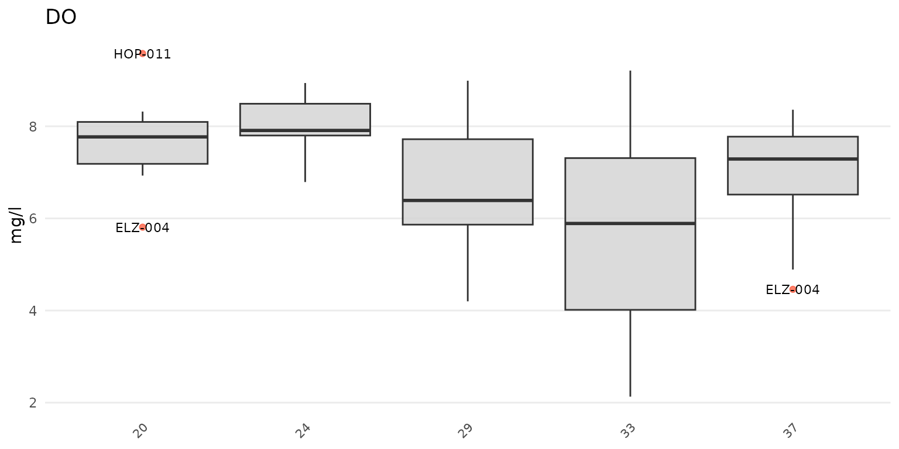
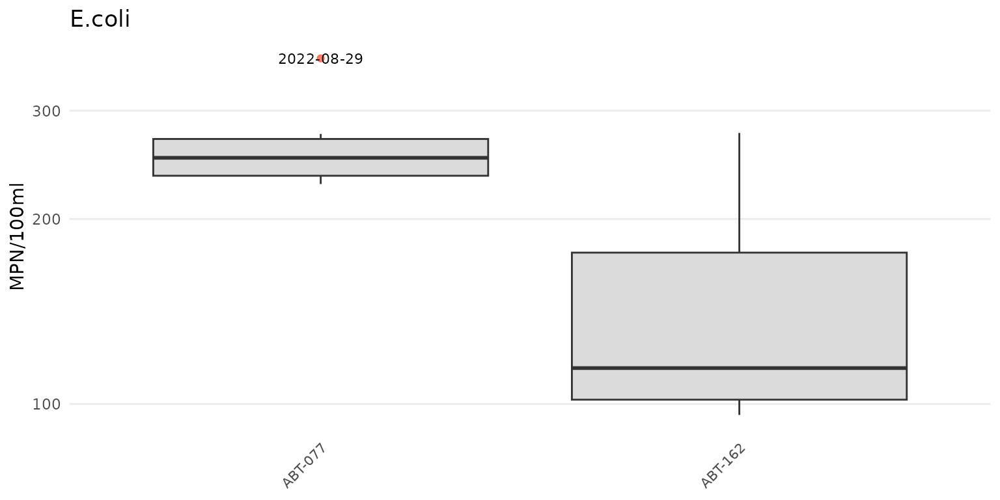

Outliers can be evaluated once the required data are successfully imported into R (see the data input and checks vignette for an overview). The results data file with the monitoring data is required. The data quality objectives file for accuracy is also required to determine plot axis scaling as arithmetic (linear) or logarithmic and to fill results data that are below detection or above quantitation limits. The example data included with the package are imported here to demonstrate how to use the analysis functions:
library(MassWateR)
# import results data
respth <- system.file("extdata/ExampleResults.xlsx", package = "MassWateR")
resdat <- readMWRresults(respth)
#> Running checks on results data...
#> Checking column names... OK
#> Checking all required columns are present... OK
#> Checking valid Activity Types... OK
#> Checking Activity Start Date formats... OK
#> Checking Activity Start Time formats... OK
#> Checking for non-numeric values in Activity Depth/Height Measure... OK
#> Checking Activity Depth/Height Unit... OK
#> Checking values in Activity Depth/Height Measure > 1 m / 3.3 ft... OK
#> Checking Activity Relative Depth Name formats... OK
#> Warning: Checking Characteristic Name formats...
#> Characteristic Name not used for quality control: Air Temp, Gage
#> Checking Characteristic Name formats... WARNING
#> Checking Result Values... OK
#> Checking QC Reference Values... OK
#> Checking for missing entries for Result Unit... OK
#> Checking if more than one unit per Characteristic Name... OK
#> Checking acceptable units for each entry in Characteristic Name... OK
#>
#> All checks passed (1 WARNING(s))!
# import accuracy data
accpth <- system.file("extdata/ExampleDQOAccuracy.xlsx", package = "MassWateR")
accdat <- readMWRacc(accpth)
#> Running checks on data quality objectives for accuracy...
#> Checking column names... OK
#> Checking all required columns are present... OK
#> Checking column types... OK
#> Checking for text other than <=, ≤, <, >=, ≥, >, ±, %, AQL, BQL, log, or all... OK
#> Checking Parameter formats... OK
#> Checking for missing entries for unit (uom)... OK
#> Checking if more than one unit (uom) per Parameter... OK
#> Checking acceptable units (uom) for each entry in Parameter... OK
#>
#> All checks passed!Analyzing outliers
Outliers can be identified using the anlzMWRoutlier() function. Evaluating data for outliers is a critical step of quality control, and this function allows a user to quickly identify them for removal or additional follow-up. Outliers are defined using the standard definition of 1.5 times the interquartile range (the 25th to 75th percentile) of a parameter, depending on the grouping used for the function. They are visually identified as points above or below the whiskers in the boxplots that describe distribution of the data, i.e., the box defines the interquartile range, the horizontal line is the median, and the whiskers extend above and below 1.5 times the interquartile range.
A summary of the distribution statistics shown with a standard boxplot. Outliers extend beyond the whiskers and are 1.5 times the interquartile range.
The anlzMWRoutlier() function uses the results data as a file path or data frame as input. The results for a selected parameter are shown as boxplots, with the outliers labelled accordingly. Outliers can be shown by month using group = "month", by site using group = "site", or by week of year using group = "week". Below, outliers are shown for dissolved oxygen grouped by month.
anlzMWRoutlier(res = resdat, param = "DO", acc = accdat, group = "month")
The same data are also grouped by site.
anlzMWRoutlier(res = resdat, param = "DO", acc = accdat, group = "site")
The same data can also be grouped by week using group = "week". The week of the year is shown on the plot as an integer. Note that there can be no common month/day indicating the start of the week between years and an integer is the only way to compare summaries if the results data span multiple years.
anlzMWRoutlier(res = resdat, param = "DO", acc = accdat, group = "week")
Results can also be filtered by dates using the dtrng argument. The date format must be YYYY-MM-DD and include two entries.
anlzMWRoutlier(res = resdat, param = "DO", acc = accdat, group = "site", dtrng = c("2021-05-01", "2021-07-31"))
Points that are not outliers can also be jittered over the boxplots using type = "jitterbox" (default is type = "box"). Outlier labels that overlap are also offset by default. This can be suppressed using repel = FALSE.
anlzMWRoutlier(res = resdat, param = "DO", acc = accdat, type = "jitterbox", group = "month", repel = FALSE)
Specifying type = "jitter will suppress the boxplots.
anlzMWRoutlier(res = resdat, param = "DO", acc = accdat, type = "jitter", group = "month")
The y-axis scaling as arithmetic (linear) or logarithmic can be set with the yscl argument. If yscl = "auto" (default), the scaling is determined automatically from the data quality objective file for accuracy, i.e., parameters with “log” in any of the columns are plotted on log10-scale, otherwise arithmetic. Setting yscl = "linear" or yscl = "log" will set the axis as linear or log10-scale, respectively, regardless of the information in the data quality objective file for accuracy. Below, the axis for E. Coli is plotted on the log-10 scale automatically. The y-axis scaling does not need to specified explicitly in the function call because the default setting is yscl = "auto".
anlzMWRoutlier(res = resdat, param = "E.coli", acc = accdat, group = "month")
To force the y-axis as linear for E. Coli, yscl = "linear" must be used. Note that the default linear scaling for dissolved oxygen above is determined automatically.
anlzMWRoutlier(res = resdat, param = "E.coli", acc = accdat, group = "month", yscl = "linear")
Finally, a data frame of the identified outliers can also be returned by setting outliers = TRUE. This table can be used to identify the outliers in the original data for removal or additional follow-up.
anlzMWRoutlier(res = resdat, param = "DO", acc = accdat, group = "month", outliers = TRUE)
#> # A tibble: 7 × 6
#> `Monitoring Location ID` `Activity Start Date` Activ…¹ Chara…² Resul…³ Resul…⁴
#> <chr> <date> <chr> <chr> <dbl> <chr>
#> 1 SUD-293 2021-03-21 08:16 DO 9.32 mg/l
#> 2 LND-007 2021-05-19 06:35 DO 3.05 mg/l
#> 3 HBS-080P 2021-05-19 09:29 DO 14.4 mg/l
#> 4 HBS-080P 2021-05-19 09:33 DO 14.1 mg/l
#> 5 HBS-095P 2021-06-14 05:17 DO 14.7 mg/l
#> 6 SUD-005 2021-11-14 07:15 DO 8.44 mg/l
#> 7 HBS-016 2021-11-14 07:25 DO 7.11 mg/l
#> # … with abbreviated variable names ¹`Activity Start Time`,
#> # ²`Characteristic Name`, ³`Result Value`, ⁴`Result Unit`Output all outlier results
Outlier plots for all parameters in the results data file can be created using the anlzMWRoutlierall() function. This can be used to create a word document with all plots embedded in the file or as separate png images saved to a specified directory. The relevant arguments required for the function include format = "word" or format = "png" to specify the output type, fig_height and fig_width for the plot dimensions (default as 4 and 8, respectively), and output_dir and output_file for the output directory and file name. The rest of the arguments are all those required for anlzMWRoutlier(), except the param argument because plots for all parameters are created in the output.
Create a word document for all outlier plots in the current working directory:
anlzMWRoutlierall(res = resdat, acc = accdat, group = 'month', format = 'word', output_dir = getwd())Create the same output but as separate png plots for each parameter:
anlzMWRoutlierall(res = resdat, acc = accdat, group = 'month', format = 'png', output_dir = getwd())Once the function is done running, a message indicating success and where the file(s) is located is returned.